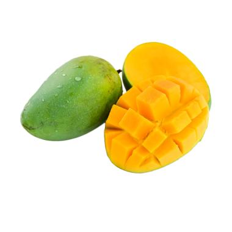

tentangbuah.com
Mangga

Mangga atau mempelam adalah nama
sejenis buah, demikian pula nama pohonnya. Mangga termasuk ke dalam
marga Mangifera, yang terdiri dari 35-40 anggota dari suku
Anacardiaceae.
Nama "mangga" berasal dari bahasa Tamil, mankay,
yang berarti man "pohon mangga" + kay "buah".Kata
ini dibawa ke Eropa oleh orang-orang Portugis dan diserap menjadi
manga (bahasa Portugis), mango (bahasa Inggris)
dan lainnya.
Mangga berasal dari daerah di sekitar perbatasan India dengan Burma,
dan mangga telah menyebar ke Asia Tenggara sekurang-kurangnya
semenjak 1500 tahun yang silam.Buah ini dikenal pula dalam berbagai
bahasa daerah, seperti pelem atau poh.
Khasiat Mangga
- Menurunkan Berat Badan
- Meningkatkan Daya Tahan Tubuh
- Melancarkan Pencernaan
- Menurunkan Kolesterol
- Menjaga Kesehatan Mata
- Mencegah Kanker
Daftar Harga
| Jenis Mangga | Harga | |
|---|---|---|
| Per Kilo | Per Biji | |
| Mangga Manalagi | 25.000 | 6.200 |
| Mangga Golek | 35.000 | 8.700 |
| Mangga Madu | 18.000 | 2.200 |
| Mangga Gadung | 30.000 | 7.500 |